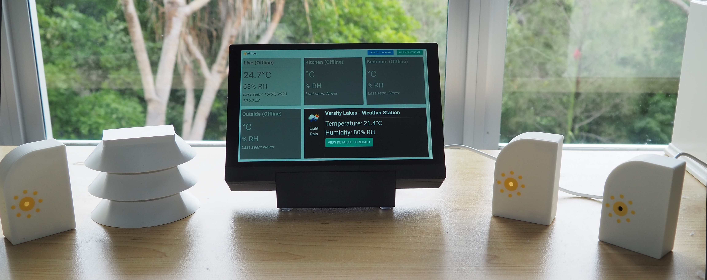

Ethos Project
Overview
This site hosts the documentation for the heat early warning system developed by the Ethos Project at Griffith University with funding provided by the Wellcome Trust (grant 224709/Z/21/Z: 'Individualised heat-health early warning systems: A novel digital solution', held by S. Rutherford, A. J. E. Bach, S. Binnewies).
The Ethos Project aims to provide a heat Early Warning System (EWS) for vulnerable populations, such as older adults. It achieves this through real-time monitoring of ambient conditions (ambient temperature and relative humidity) using sensors placed around a user's place of residence. These sensors then transmit that information to a base station which then processes and displays that data as well as forwards it to the server. There is also an optional smartphone app developed by the Griffith App Factory which can act as an alternative User Interface (UI) to the base station by connecting to the server.
 Photo of the Ethos system. From left to right: indoor sensor, outdoor sensor, base station, indoor sensor x2.
Architecture
The project is largely comprised of four main components:
- Ethos Base Station - This is the heart of the system and is responsible for: receiving transmitted sensor information, processing that information to calculate risk based on user information and forwarding the sensor/risk information to the server.
- Ethos Temperature Sensor - These are the individual sensors which read the ambient temperature and relative humidity and transmit that information to the base station using radio communication.
- Ethos Server - This receives and stores the user's temperature/humidity data in a database. It is also responsible for sending surveys during heatwaves, as well as storing the survey answers. All stored data is de-identified.
- Ethos Smartphone App (optional) - An optional smartphone app which can connect to the server and act as a UI similar to the base station.
graph TD
%% External Elements
twilio[Twilio]
%% Ethos-temperature-sensor
subgraph ETS [Ethos-temperature-sensor]
direction TB
sht45[("SHT45 Sensor")]
feather_m0["Feather M0 Board<br>(feather_m0.ino)"]
radio_tx["RFM95 TX Module<br>(radio.cpp)"]
sht45 -- Temperature/Humidity --> feather_m0
feather_m0 -- Controls & Reads --> radio_tx
end
%% Ethos-base-station
subgraph EBS [Ethos-base-station]
direction TB
bs_python_radio["Python Radio Receiver<br>(python_radio)"]
bs_js_ui["JavaScript UI<br>(javascript_ui)"]
bs_python_radio -- "Heat Risk Data<br>(WebSockets)" --> bs_js_ui
end
%% Ethos-server (Dockerized)
subgraph ES [Ethos-server]
direction TB
srv_nginx["Nginx<br>(Reverse Proxy, SSL Termination)"]
srv_certbot["Certbot<br>(SSL Certificates)"]
srv_couchdb[("CouchDB<br>(Database)")]
srv_nodejs["Node.js Server<br>(Survey Logic, Notifications)"]
srv_redis[("Redis<br>(Survey Flags)")]
srv_certbot -.-> srv_nginx
srv_nginx <--> srv_couchdb
srv_nginx <--> srv_nodejs
srv_nodejs <--> srv_redis
end
%% Ethos-smartphone-app (Optional)
subgraph EApp ["User's smartphone"]
direction TB
app_ui["Ethos iOS/Android App UI"]
end
%% Connections
radio_tx -- "Sensor Data via RFM95" --> bs_python_radio
bs_js_ui <-- "HTTPS" --> srv_nginx
srv_nodejs -- "HTTPS" --> twilio
twilio -- "Push/SMS Notifications" --> EApp
app_ui <-- "HTTPS" --> srv_nginx
%% Styling (Optional - for better visual distinction if supported well)
classDef sensor fill:#f9f,stroke:#333,stroke-width:2px;
classDef basestation fill:#ccf,stroke:#333,stroke-width:2px;
classDef server_component fill:#9cf,stroke:#333,stroke-width:2px;
classDef app fill:#lightgreen,stroke:#333,stroke-width:2px;
classDef external fill:#eee,stroke:#333,stroke-width:2px;
class ETS,sht45,feather_m0,radio_tx sensor;
class EBS,bs_python_radio,bs_js_ui basestation;
class ES,srv_nginx,srv_certbot,srv_couchdb,srv_nodejs,srv_redis server_component;
class EApp,app_ui app;Hardware
Base Station
| Component | Make | Model | SKU | Website/Datasheet |
|---|---|---|---|---|
| Processor | RasperryPi | RaspberryPi 4 Model B 4GB | CE06425 | RaspberryPi Store |
| Radio Bonnet | Adafruit | LoRa Radio Bonnet with OLED - RFM95W @ 915MHz | 4074 | Adafruit Store |
| Screen | Waveshare | 8DP-CAPLCD | 23741 | Waveshare Store |
| Speakers/Soundcard | Yahboom | USB sound card and speaker for Raspberry Pi/Jetson/RDK series board | 6000301288 | Yahboom Store |
Temperature Sensors
| Component | Make | Model | SKU | Website/Datasheet |
|---|---|---|---|---|
| MCU | Adafruit | Feather M0 with RFM95 LoRa Radio | 3178 | Adafruit Store |
| Sensor | Sensirion/Adafruit | SHT45 | 5665 | Adafruit Store |
| Battery | PKCELL | Lithium Ion 3.7v 2200mAh | 1781 | Adafruit Store |
| PCB | Custom built PCB | Designed in house, manufactured with PCBWay | N/A | PCB Files Here |
Server
We used an Ubuntu VPS server for the project, running Ubuntu 20 hosted with BinaryLane. The server utilized 4VCPUs with 8GB RAM and 100GB disk space.